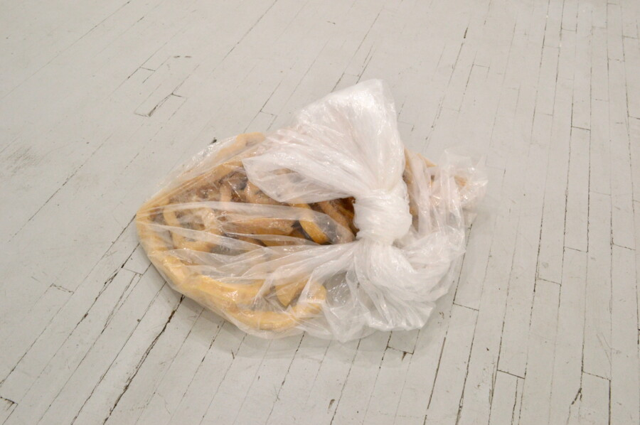

LVL 3 EXPO Week Extended Open Hours
LVL3 is excited to present the two-person exhibition, Carriage, featuring the work of Hyeseul Song (Chicago, IL) and Häsler Gómez (Richmond, VA). Carriage will remain on view until May 3rd, 2026.
Objects of support are ubiquitous in contemporary life. Containers are made to be held by containers that are made to be held by hands. Because of their everpresence, these objects become overlooked for what they are beyond the immediate purposes they serve. A shelf holds a box that holds a thought, a thing, a form, its layers of containment leaving only a shape. The shape is cast off from its counterpart, left to yearn for its lover, for its friend. Scaffolding embraces the building it is assembled next to. To the passersby below, it is a shield from falling debris, a form rarely recognized as a structure of care. Corrugated whispers press into the ridges of waste, passing through the shapes that pass through us—our hands, just another fleeting shelf.
The work of Hyeseul Song and Häsler Gómez acknowledge the things that are seldom given extended attention yet are so populous in contemporary life. Where many see simple utility or a mere container meant to be thrown away, the artists see kinship, complexity, opportunity, and character. Through this attentive reconfiguration, the material world is recast with far greater reverence and depth.
Extended Hours, Friday 6-9 PM, Saturday 6-9pm
Gallery hours are Sundays 1-4 pm and can also be made by appointment. Email team@lvl3official.com or call/text 312-469-0333 to reserve a time outside of gallery hours.